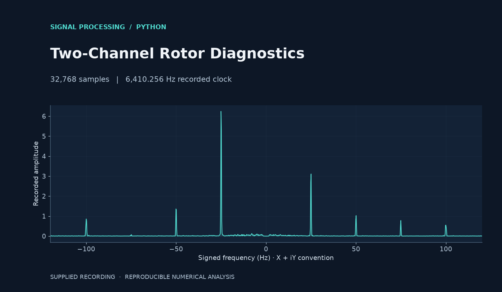

Project summary / Signal processing
Two-Channel Rotor DiagnosticsTwo channels. A signed spectral perspective.
Full-spectrum analysis and channel-mean trends share one paired displacement recording, with explicit timing and interpretation limits.

- 32,768
- input samples
- 6,410.256 Hz
- rate from recorded timestamps
- 5.112 s
- first-to-last sample span
- 0.1956 Hz
- full-record FFT bin spacing
Input and approach
The input orbit_data.csv appears in FullSpectrum + SCP. SHA-256 comparison confirmed identical copies; these analyses are grouped in one project and the repository stores one canonical recording. The existing Orbit Analyzer remains separate and unchanged; this project adds only the non-orbit FullSpectrum and SCP work.
Measured results
The strongest non-DC X-channel bin is 25.040 Hz. True RMS is 3.1263 and peak-to-peak is 14.8198, both in recorded units. The Y channel also peaks at 25.040 Hz. The largest signed-spectrum bin is -25.040 Hz under the X + iY convention. The Y mean of -5.4352 is retained in the mean trend rather than removed by filtering.
Validation
13 numerical checks passed, plus a completed run on the supplied recording. Source and input provenance stay with the independent repository.
Interpretation
The CSV gives 6,410.256 Hz from its recorded timestamps. The earlier orbit project established a 6,400 Hz reference from a separate workbook. These plots use the CSV clock; the runner allows an explicit override and records it in the result. No speed channel or DC sensor calibration is supplied. Channel means cannot establish absolute shaft position or a speed-dependent centerline. Positive and negative frequencies follow X + iY; identifying physical whirl direction also requires sensor orientation and the machine rotation convention.